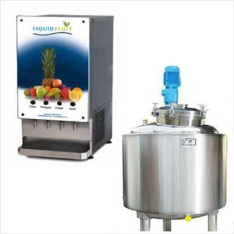

By 2016, 10 people diagnosed with cancer and other diseases drank the Hearty Condensed Juice. They made testimonials on their incredible results.
We have 3 types of the condensed juice:
For cancer with diabetes
For cancer without diabetes
Other diseases
You should maintain a strong Immune System when you have cancer. Hearty Juice will assist you with vitamins and antioxidants.
Hearty Condensed Juice is not for everyone!
It is for anyone who:
- is sick and committed to healing,
- is afraid of becoming sick,
- cares for their families’ health,
- wants to change their health care system.
How it is made:
Prepare ingredients

Mix green juice with fermented juice
Stir and cook until condensation
Finished condensed juice
Pour condensed juice to 50ml warm water (40°C). Stir and drink.